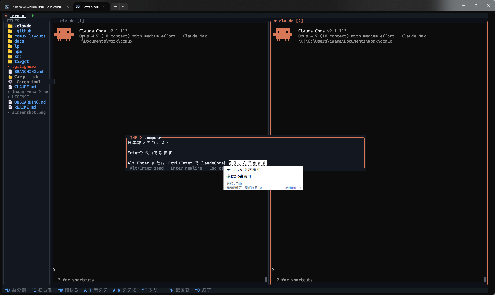

ccmux-fork
Shin-sibainu/ccmux
のフォーク。独自機能を先行開発しており、npm では
ccmux-fork として配布しています。

Alt+Enter で送信、Enter で改行、
--ime-freeze-panes と併用すれば背景のちらつきも止められます。
このフォークは上流 (upstream) の変更を定期的に取り込みながら独自機能を先行開発しています。 オリジナル版は upstream リポジトリ を参照してください。
$ npm install -g ccmux-fork
upstream の ccmux-cli から移行する場合:
$ npm uninstall -g ccmux-cli
$ npm install -g ccmux-forkupstream との差分
このフォークは現在の upstream master の厳密なスーパーセットです — 上流にある機能はすべて含みます。
以下は、リリース済み upstream スナップショットと比べてフォーク固有の追加機能です:
| 機能 | upstream | フォーク |
|---|---|---|
中央多行 IME composition overlay (Windows + サードパーティターミナルでの JP / CN / KR 入力)
Alt+Enter で送信、Enter で改行、
ホスト IME の候補窓がキャレットに吸着
|
— | ✓ |
IME 入力中の pane 凍結 + 周期 catch-up
--ime-freeze-panes で PTY 由来の repaint を抑止、
--ime-overlay-catchup-ms で凍結中にも
streaming 出力が読める周期更新を再投入
|
— | ✓ |
Pane ライフサイクルイベント (ccmux events --timeout / --count)
PaneStarted / PaneExited を改行区切り JSON として
subscribe 可能。heartbeat ベースの half-close 検出と
安定した error code を併用
|
— | ✓ |
スクリーンスナップショット + レイアウト取得
ccmux inspect が 1 行ごとの JSON スナップショットを返し、
ccmux list は各 pane の rect を含むので外部ツールから
画面座標でマッチ可能
|
— | ✓ |
pane サイズの最小値を CLI で変更可能
--min-pane-width / --min-pane-height で
デフォルトの 20×5 を上書き。狭い分割を必要とするレイアウトのために
ソースをパッチする必要がなくなりました
|
— | ✓ |
ccmux close サブコマンド
スクリプトから pane を終了。最後のタブの最後の pane は拒否するので、 セッション自体を誤って吹き飛ばす心配はありません |
— | ✓ |
|
安定した IPC エラーコード
すべての IPC 応答が機械可読なコード ( PANE_NOT_FOUND, AMBIGUOUS_TARGET など)
を含むので、呼び出し側が文字列マッチ無しで分岐できます
|
— | ✓ |
alt-screen TUI (Claude /tui, vim, lazygit 等) へのマウスホイール転送 |
— | ✓ |
| CI マトリクス (Windows / macOS / Linux) + rustfmt / clippy ゲート | — | ✓ |
基本 IPC (list / send / focus / split / new-tab)
upstream PR #4 と共同開発。upstream master には未マージ
|
pending | ✓ |